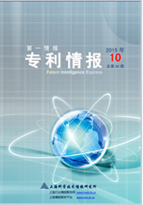
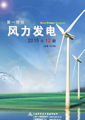
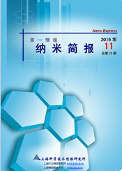
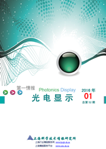
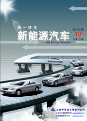
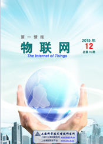
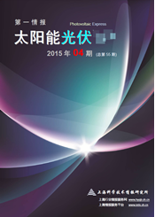
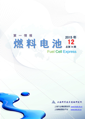

科技情报
情报期刊

《第一情报·专利情报》
发布单位：上海科学技术情报研究所
简介：在全球市场一体化、生产分工国际化的大格局中，在WTO的框架内，专利大棒被屡屡举起，砸向正把势力范围扩展到全球的中国企业。诚然，作为最大的发展中国家，中国企业在专利保护、专利积累和专利管理经验方面还有很多不足，也不乏“原罪”；但是，放任对手滥用知识产权的狂妄，放弃自强不息的专利修炼，将是对整个产业的最大失责。 《第一情报·专利情报》的创刊，旨在提供国内外专利战略相关领域的最新发展动态和政策导向，切实发挥预警、竞合、战略的“第一情报”功能。


《第一情报·纳米科技》
发布单位：上海科学技术情报研究所
简介：《第一情报·纳米科技》的创刊，旨在提供国内外纳米技术领域的最新发展动态和政策导向，切实发挥预警、竞合、战略的“第一情报”功能。

《第一情报·光电显示》
发布单位：上海科学技术情报研究所
简介：有机电致发光二极管显示(OLED) 作为未来极具潜力的产品，具有自发光、结构简单、超轻薄、响应速度快、宽视角、低功耗及可实现柔性显示等特性，为第三代显示技术的重点发展方向，也是被人们看好的固态照明光源。《第一情报·光电显示》的创刊，旨在提供国内外光电显示技术领域（包括OLED、3D显示技术等）的最新发展动态和政策导向，切实发挥预警、竞合、战略的“第一情报”功能。

《第一情报·新能源汽车》
发布单位：上海科学技术情报研究所
简介：低碳、新能源、哥本哈根无疑是2009 年度的热门话题。作为节能减排的重要领域之一，新能源汽车也当之无愧地成为“耀眼的明星”。尽管对于新能源汽车的发展，业内存在不同的声音，但可以肯定的是，传统汽车的升级换代和技术革新已经势不可挡。《第一情报·新能源汽车》的创刊，旨在提供国内外新能源汽车领域的最新发展动态和政策导向，切实发挥预警、竞合、战略的“第一情报”功能。简报为月刊形式，每月末发布。

《第一情报·物联网》
发布单位：上海科学技术情报研究所
简介：2005 年，国际电信联盟（ITU）发布了一份题为《The Internet of Things》的年度报告，对物联网概念进行了扩展，提出了任何时刻、任何地点、任意物体之间互联，无所不在的网络和无所不在的计算的发展愿景，除核心技术RFID 技术外，传感器技术、纳米技术、智能终端等技术将得到更加广泛的应用。《第一情报·物联网》的创刊，旨在聚焦国内外物联网领域的核心技术最新发展动态、应用和政策导向，提供最新的物联网情报，切实发挥预警、竞合、战略的“第一情报”功能。


《第一情报·燃料电池》
发布单位：上海科学技术情报研究所
简介：燃料电池是继水力、火力和核能发电后的第4代发电技术，也是目前唯一同时兼备无污染、高效率、适用广、无噪声和可连续工作的动力装置，被认为是21世纪最有发展前景的高效清洁发电技术。与生物燃料、风力发电、太阳能这3种新能源产业相比，燃料电池目前市场规模还较小，然而今后10年内的发展速度将非常惊人。本简报旨在追踪燃料电池领域最新技术和市场动向。